To enlarge, click some photos which have titles in light blue or light yellow color background.
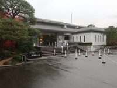 | 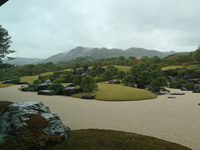 | 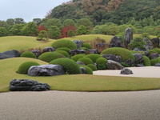 | 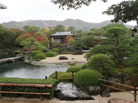 | 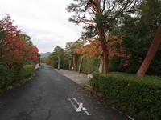 |
| Adachi Museum of Art | the garden 1 | the garden 2 | the garden 3 | around the garden |
Early in the morning, 5:30, we left my house to Yasugi city and stopped in at two service station on the express highway, and a place on the way.
At 11:50 as soon as we arrived at the parking of the art museum, we called in the inn, which was next to the museum, to get Yasugi city coupon tickets, 6, 000 yen.
Then we entered the museum. However, at first I didn't find the entrance of the main building because it looked that it was smaller than not only an extensin building but also a souvenir store.
Soon after, walking one floor, we could enjoy seeing the gorgeous and beautiful Japanese garden, which looked big and containing a far mountain.
After a while we had lunch at the restaurant inside of the museum to take a rest.
Two floor has the special exhibition room of Yokoyama Taikan. It was the season of autumnal leaves so we could see famous his Japanese-style painting Japanese maples called 'Momiji' in Japanese.
We used all Yasugi city coupon tickets for the admission and lunch.
After two hours we went out to Gassan-Tomita-Jo castle which is 190m height mountain fort ruins. It was about 40 minutes to take us to the top of mountain from the middle way of parking. From there we could look out over whole the site of castle.
At the inn the taste of the main dish, king crab, was terrible. I found it clear that the cook skill was miserable because every dish was awful. I was really disappointed at the inn for the pity meals although all staffs were kind and pleasant.
By the way, I wondered the garden of the museum looked quite large though I couldn't see such big space around this area. It was not until we took a walk around the museum early in the morning next day, that I realized the scale of the garden which was not so large, was made skillfully and cleverly.
|
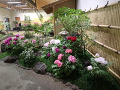 |
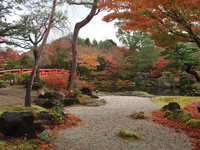 |
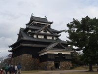 |
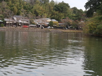 |
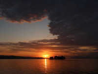 |
| Yushien Garden 1 | Yushien Garden 2 | Matsue-jo Castle | the moat | the evening sun |
At 8:30 we started to Yushien Garden which is the biggest garden in Sanin.
Yushien Garden is well known to various kind of Japanese peonies of which some are in full bloom every season, and circuit-style Japanese garden incorporating trees, paving stones, waterfalls and stone lanterns.
Of course Japanese peonies and Japanese garden were picturesque and delighted us much with turning red and yellow leaves.
We stayed at Yushien Garden from 9:10 to 10:10 and arrived at 'Matsue-jo' at about 11:00.
We were walking around castle area and we climbed the castle tower. We could see beautiful Shinji-ko lake there.
Then we joined the Horikawa Sightseeing Boat Tour going around the castle and through the city. The landscape from a boat was different and unique for daily eyes.
After that, strolling along the moat, we visited Koizumi Yagumo house, a samurai house and so on.
At last we headed to Shinji-ko lake to see evening sun at about 15:30. However, it was cloudy and sometimes raining that day so we couldn't expect the good setting sun. Killing the time, we waited at the sunset viewing spot called 'Torupa' that was along the lakefront promenade with about 30 people. Fortunately from there, we could enjoy a view of the evening sun with the tiny island Yomegashima for about 16:00 to 17:00.
|
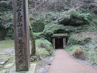 |
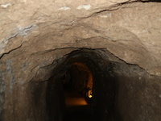 |
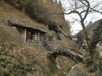 |
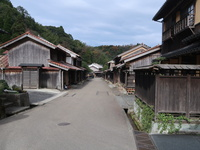 |
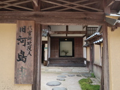 |
| Ryugenji Mabu 1 | Ryugenji Mabu 2 | Gohyaku Rakan | Mining Town | Shogunate official house |
At 7:30 we left the hotel to Iwami Ginzan Silver Mine World Heritage Center to get the basic knowledge of the area.
On arriving there at 10:20, we looked around some materials for a while and headed for Iwami Ginzan Silver Mine Park.
At 9:50 we were there, that place is the start point for sightseeing of Iwami Ginzan.
At first we borrowed electoric assisted bicycles to go to 'Ryugenji Mabu Mine'. The tunnel was not special but I felt historical atmosphere.
After coming back to the park we started walking and paid a visit to 'Gohyaku Rakan' which was artistic and solemn.
Strolling the old townscape, we looked at some old houses of the era.
At 13:30 we left there to my house and we arrived at my home at 18:50 safe and sound after the long drive.
We had three defects on this trip. Firstly, at the inn dishes was terrible. Secondly, a forecast said it was cloudy but it was cloudy and sometimes raining for the first and the second days. Thirdly, we made some over expiration date coupon tickets because I didn't checked the date. Although we were in those miserable, we enjoyed sightseeing on the trip for two nights.
{kind=link}
{kind=link}
{kind=link}
{kind=link}
{kind=link}
{kind=link}
{kind=link}
{kind=link}
{kind=link}
{kind=link}
{kind=link}
{kind=link}
{kind=link}
{kind=link}
{kind=link}